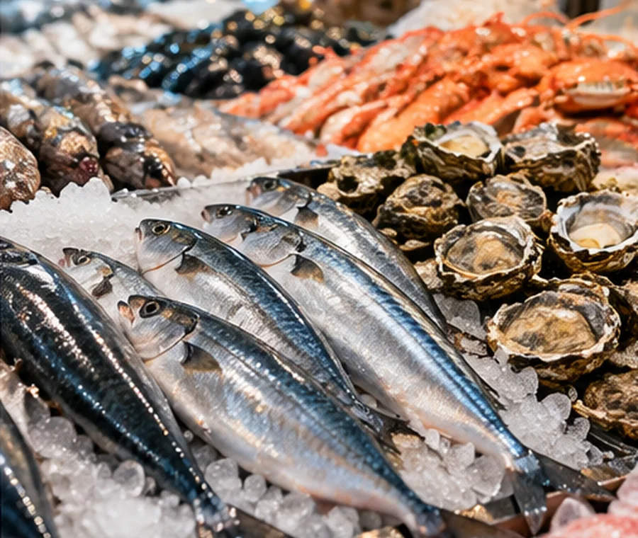
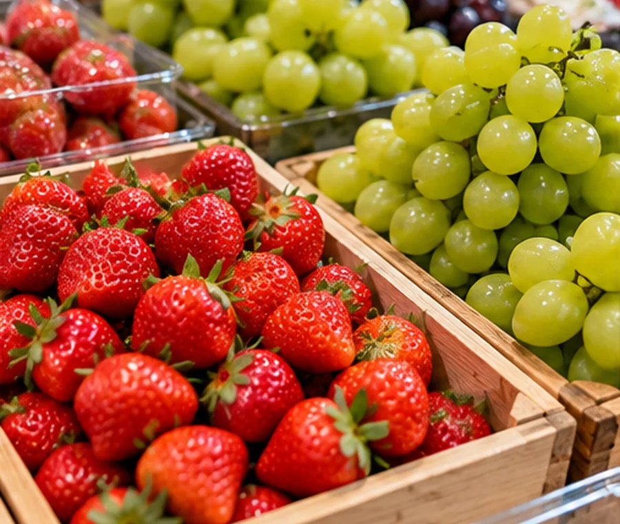

CHAPTER 01 · SEAFOOD수산 시장에서 볼 것들
수산물 구역에서 품목과 메뉴를 비교하고, 등록된 매장별 소개·메뉴판을 확인해 보세요.
시장 골목에서 매장을 발견하고, 메뉴를 구경하고,
쿠폰으로 길을 찾는 새로운 시장 여행.
각 구역을 선택하면 등록된 점포를 검색할 수 있습니다. 이미지와 코스는 기획용 시연입니다.
가락시장 내 등록 점포를 찾고, 메뉴·블로그·길찾기를 한 곳에서 확인하세요.
※ 이 구역 그림은 테마 안내용 모식도입니다. 실제 건물 배치 및 개별 실내 좌표와 다릅니다.
시장 곳곳을 발견해 자신만의 가락랜드 컬렉션을 완성해 보세요.
첫 매장 발견부터 시작해 보세요.
쿠폰을 발급받고 쿠폰 카드 또는 🧭 길찾기를 누르세요. Google 지도가 목적지 안내를 시작합니다.

혜택 수령 후 매장 안내가 바로 열립니다. 위치가 확인되지 않은 점포는 가락시장 공통 위치로 안내됩니다.
매장 메뉴를 선택하고 포장·배달 요청 동선을 확인하세요. 실제 주문 접수·결제는 연동 전 시연입니다.
점포에서 직접 등록한 메뉴를 확인하고, 주문 동선을 시연해 볼 수 있습니다.
매장 홍보, 3분 현장 QR, 정기 쿠폰 발행, 사용 확인, 주문 시연 승인까지 한 화면에서 관리합니다.
매장 정보·메뉴판·사진·쿠폰을 관리해 고객 탐험 화면과 연결합니다.
3분 후 만료되는 QR입니다. 방문자는 GPS와 함께 인증해야 합니다.
기존 Google 블로그와 배달 파트너 URL을 연결합니다. 메뉴는 이름|가격 형태로 줄마다 입력하세요.
실제 매장 사진은 별도 등록한 기준 이미지와 비교합니다. 기준 간판 사진·메뉴판·대표 이미지를 각각 등록하세요.
방문 목적별 탐방 아이디어와 품목 이야기를 읽고, 관련 매장 검색으로 이어지는 디지털 가이드북입니다. 아래 구역은 실내 도면이 아닌 테마 기획입니다.
제철 과일, 바다에서 온 신선함, 오늘의 따뜻한 한 끼. 가락랜드와 함께 시장의 새로운 매력을 발견하세요.

CHAPTER 01 · SEAFOOD수산물 구역에서 품목과 메뉴를 비교하고, 등록된 매장별 소개·메뉴판을 확인해 보세요.
계절과일, 선물용 과일, 식재료 탐방까지. 실제 가격·재고는 매장에서 확인하세요.
장보기 목록을 준비하고 관심 매장의 위치를 찾아 효율적으로 둘러보세요.
매장 쿠폰을 받고 GPS 길찾기로 현장을 방문할 수 있습니다.
※ 본 가이드의 이미지는 AI 생성 시연 자료입니다. 실제 매장 모습·가격·운영 시간 또는 실내 배치로 해석하면 안 됩니다.